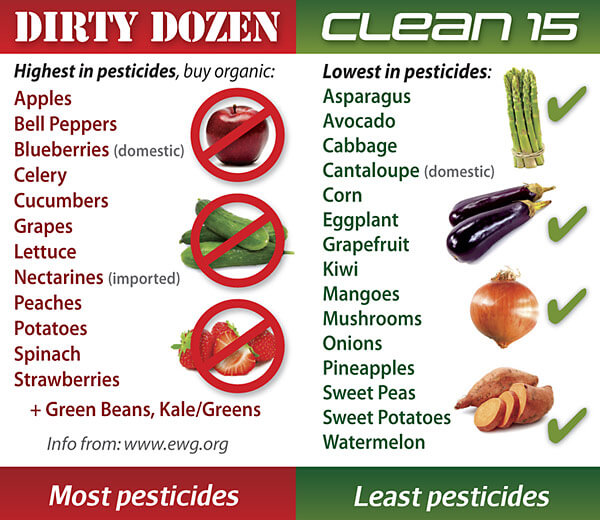
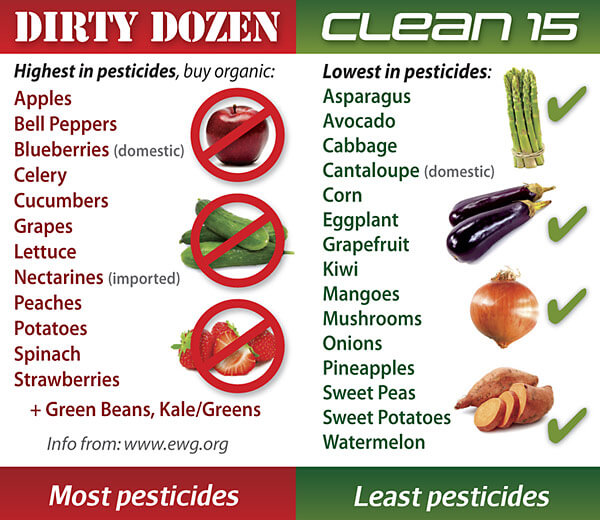

Back
Such residues could be anywhere around us, including the foods that we consume (vegetables, fruits, grains, milk, meat etc.), water, soil etc. It is reported that Indians are exposed to very high levels of pesticide residues in numerous ways. Government of India's own monitoring reports (All India Coordinated Research Project on Pesticide Residues or AICRPPR) indicated that 59% of food samples tested for were contaminated, with 20% of them being above "MRL" (Maximum Residue Limit). Modern agriculture practices reveal an increase in use of pesticides and fertilizers to meet the food demand of increasing population which results in contamination of the environment. In India crop production increased to 100% but the cropping area has increased marginally by 20%. Pesticides have played a major role in achieving the maximum crop production, but maximum usage and accumulation of pesticide residues was highly detrimental to aquatic and other ecosystem.
Pesticides may have helped in enhancing agricultural production, but at the same time these chemicals have caused adverse effects. 20 market vegetable samples in Lucknow tested for pesticides out of 20 samples, vegetables like radish, cucumber, cauliflower, cabbage, and okra, contain pesticide residue above maximum limit (MRL). However, in other vegetables the level of pesticide residues was either below detection limit or MRL (Srivastava et al., 2011).
In India, 51% of food commodities are contaminated with pesticide residues and out of these, 20% have pesticides residues above the maximum residue level values on a worldwide basis. It has been observed that their long-term, low-dose exposure are increasingly linked to human health effects such as immune-suppression, hormone disruption, diminished intelligence, reproductive abnormalities, and cancer. Although Indian average consumption of pesticide is far lower than many other developed economies, the problem of pesticide residue is very high in India. Pesticide residue in several crops has also affected the export of agricultural commodities in the last few years.
 Organochlorine pesticides are ubiquitous and persistent organic pollutants used widely throughout the world. Due to the extensive use in agriculture, organic environmental contaminants such as HCH, DDT along with other organochlorine pesticides are distributed globally by transport through air and water. Organophosphates pesticides - which are potent neurotoxins - can damage children's intelligence, brain development and nervous systems even in low doses.
Organochlorine pesticides are ubiquitous and persistent organic pollutants used widely throughout the world. Due to the extensive use in agriculture, organic environmental contaminants such as HCH, DDT along with other organochlorine pesticides are distributed globally by transport through air and water. Organophosphates pesticides - which are potent neurotoxins - can damage children's intelligence, brain development and nervous systems even in low doses.
A total of 20,618 samples were collected across the country including organic outlets out of which 5% were observed with hazardous pesticides and 2.6% of them crossed maximum residue limit (MRL)
The American Academy of Pediatrics points to food as the primary source of children’s exposure to pesticides.
List of the most contaminated fruits and vegetables – and apples have been ranked as the most contaminated - fifth year in a row. The Dirty Dozen list includes the top 12 fruits and veggies with the highest amount of pesticide residues. Vegetables and fruits are among the healthiest foods you can eat, but they're also foods that are commonly contaminated with pesticides.
 Apples - 99 percent of apple samples tested positive for at least one pesticide residue.
Peaches - 98 percent of peaches tested positive for at least one pesticide residue.
Nectarines - 97 percent of nectarines tested positive for at least one pesticide residue.
Strawberries - A single sample of strawberry showed 13 different pesticides a piece.
Grapes - A single grape sample contained 15 pesticides.
Celery, Spinach, Sweet bell peppers, Cucumbers, Cherry tomatoes, Snap peas, Potatoes - The average potato had more pesticides by weight than any other produce.
Pesticide in bottle water:
Centre for Science and Environment laboratory report found after analysing bottled water samples from Mumbai and Delhi these products can be far more lethal than one can imagine. The samples contained a deadly cocktail of pesticide residues. Samples contained as many as five different pesticide residues, in levels far exceeding the standards specified as safe for drinking water.
Tips to remove pesticides from Foods:
Amount of pesticides used by farmers in India was as much as 750 times higher than European standards.
Pesticide safety, regulation of pesticide use, proper application technologies, and integrated pest management are some of the key strategies for minimizing human exposure to pesticides.
Single Blog
PESTICIDES IN FOOD
A pesticide is any material (natural, organic, or synthetic) used to control, prevent, kill, suppress, or repel pests. Pesticide Residue is the pesticide that is remaining in a product after a chemical is applied to a crop.Such residues could be anywhere around us, including the foods that we consume (vegetables, fruits, grains, milk, meat etc.), water, soil etc. It is reported that Indians are exposed to very high levels of pesticide residues in numerous ways. Government of India's own monitoring reports (All India Coordinated Research Project on Pesticide Residues or AICRPPR) indicated that 59% of food samples tested for were contaminated, with 20% of them being above "MRL" (Maximum Residue Limit). Modern agriculture practices reveal an increase in use of pesticides and fertilizers to meet the food demand of increasing population which results in contamination of the environment. In India crop production increased to 100% but the cropping area has increased marginally by 20%. Pesticides have played a major role in achieving the maximum crop production, but maximum usage and accumulation of pesticide residues was highly detrimental to aquatic and other ecosystem.
Pesticides may have helped in enhancing agricultural production, but at the same time these chemicals have caused adverse effects. 20 market vegetable samples in Lucknow tested for pesticides out of 20 samples, vegetables like radish, cucumber, cauliflower, cabbage, and okra, contain pesticide residue above maximum limit (MRL). However, in other vegetables the level of pesticide residues was either below detection limit or MRL (Srivastava et al., 2011).
In India, 51% of food commodities are contaminated with pesticide residues and out of these, 20% have pesticides residues above the maximum residue level values on a worldwide basis. It has been observed that their long-term, low-dose exposure are increasingly linked to human health effects such as immune-suppression, hormone disruption, diminished intelligence, reproductive abnormalities, and cancer. Although Indian average consumption of pesticide is far lower than many other developed economies, the problem of pesticide residue is very high in India. Pesticide residue in several crops has also affected the export of agricultural commodities in the last few years.
Organochlorine pesticides are ubiquitous and persistent organic pollutants used widely throughout the world. Due to the extensive use in agriculture, organic environmental contaminants such as HCH, DDT along with other organochlorine pesticides are distributed globally by transport through air and water. Organophosphates pesticides - which are potent neurotoxins - can damage children's intelligence, brain development and nervous systems even in low doses.“12.5% food items contain illicit pesticides as per Govt report, 2015”
A total of 20,618 samples were collected across the country including organic outlets out of which 5% were observed with hazardous pesticides and 2.6% of them crossed maximum residue limit (MRL)
- Amongvegetable non approved pesticide were detected in 1180 samples
- Among fruits there were 225 fruit samples with pesticides
- There were 30 rice samples which were found with non-approved pesticides
- Residues of pesticides also detected 43 pulses samples
- 732 spice samples are also comprised with illicit pesticides.
The American Academy of Pediatrics points to food as the primary source of children’s exposure to pesticides.
- 54 different pesticides were found on spinach, including five that are linked to cancer;
- Peaches and pears have the most pesticides found among the baby foods sampled (22 and 26, respectively); and
- 47 residues were found on apples, including 16 suspected hormone disruptors.
List of the most contaminated fruits and vegetables – and apples have been ranked as the most contaminated - fifth year in a row. The Dirty Dozen list includes the top 12 fruits and veggies with the highest amount of pesticide residues. Vegetables and fruits are among the healthiest foods you can eat, but they're also foods that are commonly contaminated with pesticides.
 Apples - 99 percent of apple samples tested positive for at least one pesticide residue.
Peaches - 98 percent of peaches tested positive for at least one pesticide residue.
Nectarines - 97 percent of nectarines tested positive for at least one pesticide residue.
Strawberries - A single sample of strawberry showed 13 different pesticides a piece.
Grapes - A single grape sample contained 15 pesticides.
Celery, Spinach, Sweet bell peppers, Cucumbers, Cherry tomatoes, Snap peas, Potatoes - The average potato had more pesticides by weight than any other produce.
Pesticide in bottle water:
Centre for Science and Environment laboratory report found after analysing bottled water samples from Mumbai and Delhi these products can be far more lethal than one can imagine. The samples contained a deadly cocktail of pesticide residues. Samples contained as many as five different pesticide residues, in levels far exceeding the standards specified as safe for drinking water.
Tips to remove pesticides from Foods:
- Washing with 2% of salt water will remove most of the contact pesticide residues that normally appear on the surface of the vegetables and fruits.
- Almost 75 to 80 percent of pesticide residues are removed by cold water washing.
- The green leafy vegetables must be washed thoroughly. The pesticide residues from green leafy vegetables are removed satisfactorily by normal processing such as washing blanching and cooking.
- Blanching: short treatment in hot water or steam applied to most of the vegetables. Before blanching pre-wash the vegetables and fruits.
- Whip up a solution with 10 percent white vinegar and 90 percent water and soak your veggies and fruits in them.
- Treat vegetables to warm water for a short while and this should remove any leftover residue.
- Peeling is another efficient way to remove residue and comes highly recommended especially when there might be some residue in the crevices of the fruit.
- When cooking with chicken or meat, cut off the excess fat and skin as it could have absorbed unwanted pesticide residue.
- Boiling of milk at elevated temperatures will destroy the persistent pesticide residues.
Amount of pesticides used by farmers in India was as much as 750 times higher than European standards.
Pesticide safety, regulation of pesticide use, proper application technologies, and integrated pest management are some of the key strategies for minimizing human exposure to pesticides.
‘Shop smart and buy organic’